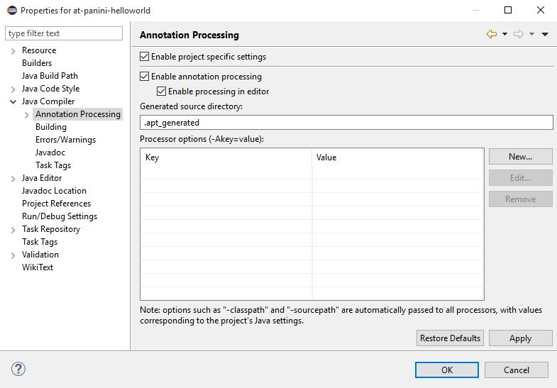

@PaniniJ
Getting Started Manual
Installation Overview
These are the overall steps to setting up an @PaniniJ project in Eclipse:
- Create an Eclipse Project
- Download the @PaniniJ jar
- Enable annotation processing
- Add at-paninij annotation processor to your build
- Add the at-paninij jar as a referenced library
1. Setup project to use JRE 1.7 or Greater
When you create a new project, be sure to choose JRE 1.7 or greater, this is necessary for the annotation processing to work correctly.

2. Download the at-paninij jar
Download the latest processor (at-paninij-proc-v0.1.0.jar)
from the github
releases page.
3. Enable Annotation Processing
Enable annotation processing by right clicking on your project in the project explorer and choosing "properties." Browse to Java Compiler > Annotation Processing and check the Enable project specific setting checkbox and Enable annotation processing.
Once you hit Apply, Eclipse will inform you that a rebuild on the project is required. You can click yes to rebuild the project now.
Note that the "Generated Source Directory" is where the sources that the annotation processor automatically generates will be stored. You can remove the "." from ".apt_generated" and it will become visible in eclipse.
4. Add at-paninij annotation processor
Navigate to the Factory Path section of the project properties. It is beneath the Annotation Processing option. Check the Enable project specific settings checkbox, and click the Add External JARs… button.

Browse to where you have downloaded the JAR file from step 2. Hit Apply and confirm the project rebuild.

5. Add the at-paninij as a referenced library
The @PaniniJ JAR file includes code necessary for the annotation processing and runtime. To include the JAR file as a referenced libaray, right click the project in the project explorer, and choose "Add External Archives…".

Browse to where you downloaded the JAR file from step 2, and include it in your project. Once it is included, the project should appear like this in the Eclipse project explorer:

Now you're ready to start programming in @PaniniJ. See the next page for an example @PaniniJ Hello World program.